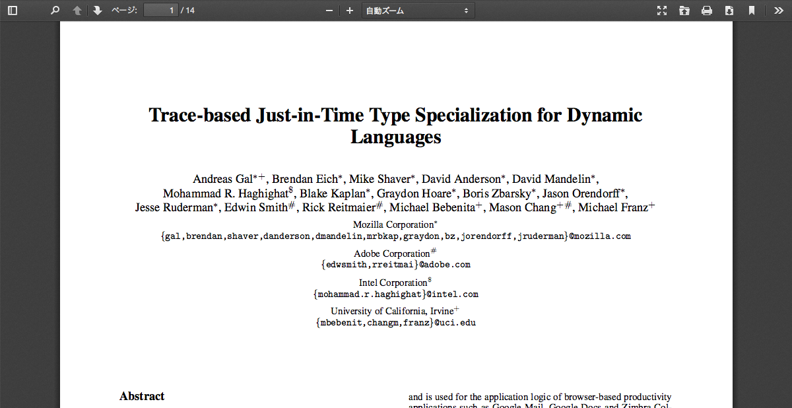

pdf.js-controller
自己紹介

- Name : azu
- Twitter : @azu_re
- Website: Web scratch, JSer.info
mozilla/pdf.js

mozilla/pdf.js
- JavaScriptで書かれたPDFレンダリングライブラリ
- FirefoxのビルトインPDFビューアーに使われてる
- PDFをパース => Canvas + テキストでレンダリング
pdf.jsの問題
- とにかく扱いにくい
cmapsという言語ロケールの動的ロードが必要- 必要なロケールのみを取得するため
pdf.worker.jsというのをWebWorkerで動かすpdf.worker.jsのURLを指定する必要がある
pdf.worker.js
- pdf.jsはWebWorkerで計算を行う
PDFJS.workerSrcはなぜかURLのみしか受け付けない- String to Blob URL for WebWorkerだとChromeでクラッシュした…
- ファイルサイズがでかいとWorker+Blobがダメなのかも?
pdf.jsのテクニック
- Worker内なら同期XHRが使える
- WorkerのコピーコストはBlob URLをやり取りで解消
pdf.jsの問題
- デフォルトでは日本語は文字化けする
cmapsのロードが必要
- デフォルトではCanvasに画像としてレンダリングされるだけ
- テキスト選択やリンクのクリックもできない!
pdf.js-controller
- pdf.jsの面倒なところをラップしたライブラリ
- スライド表示を扱うAPI
- pdfjs-distへのパスを書くだけで面倒なことはやってくれる
- 最初から日本語表示できる。テキスト選択出来る。リンクをクリック出来る
pdf.jsのレイヤー構造
全体像3D

Canvas

テキスト

アノテーション